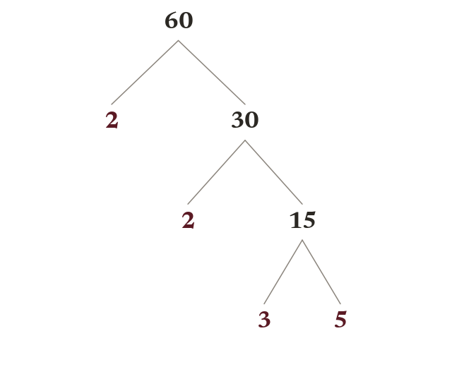
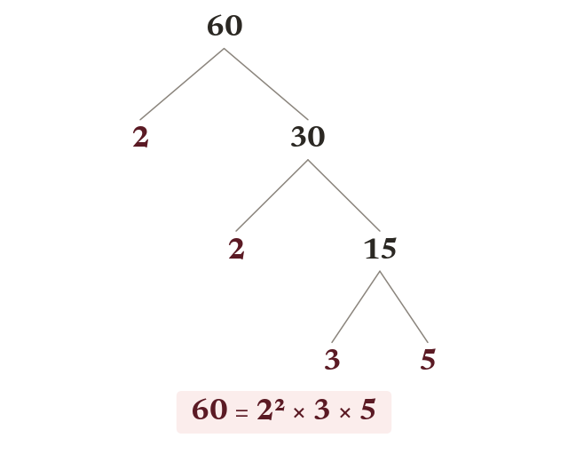
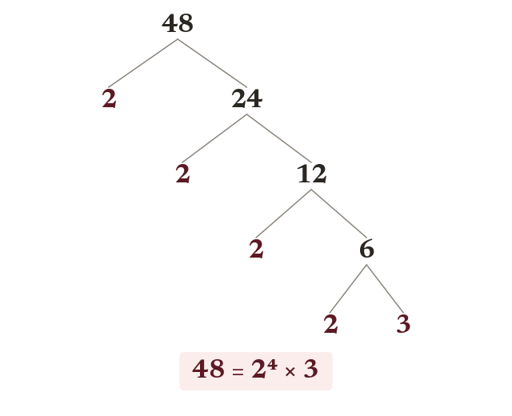
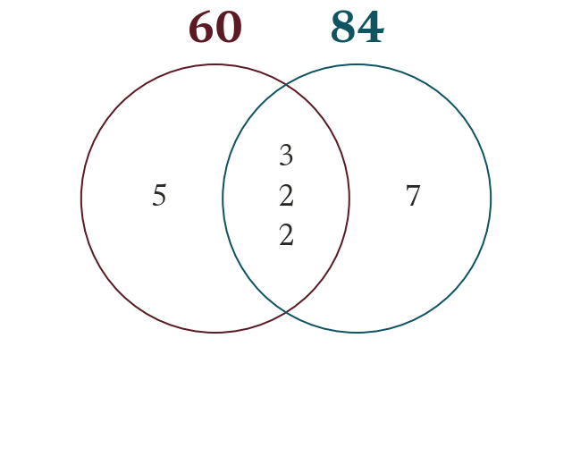
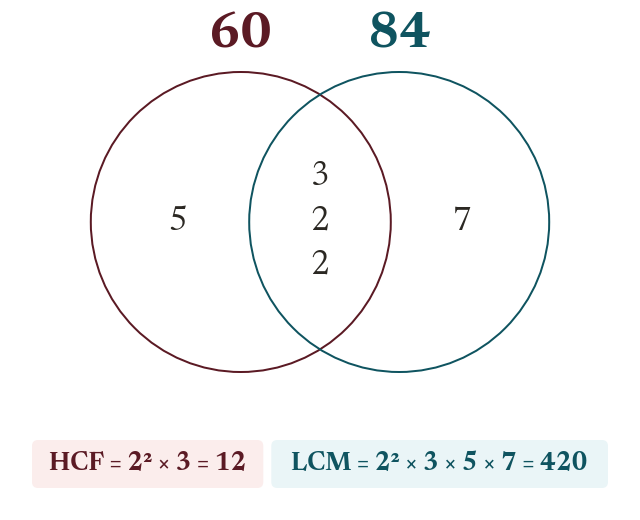
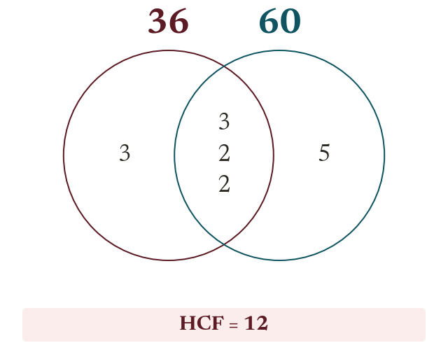

You already know how to find the HCF and LCM by listing - but for bigger numbers, listing every factor or multiple gets slow and error-prone. Prime factor decomposition breaks any number down into its unbreakable building blocks, and once you can see those, HCF and LCM become a matter of reading them off a diagram instead of a long list.
By the end you’ll know…
Every whole number above 1 is prime, or a product of primes in exactly one way.
A factor tree splits a number until every branch ends in a prime, and the primes are the same whichever pair is split first.
Index form collects the repeats: 60 = 2 × 2 × 3 × 5 = 2² × 3 × 5.
In a prime-factor Venn, the HCF is the product of the intersection and the LCM the product of the whole diagram.
By the end you can
G4Find the prime factor decomposition of a number using a factor tree (index and non-index form).
G5Use a Venn diagram of prime factors to find the HCF and LCM of two numbers.
Work down the page at your own pace. Write every answer in your book first, then click to check it.
01
Do Now
About 5 minutes
1
Is 23 prime? Write 2 × 2 × 2 × 2 using index notation.
23 is prime. 2 × 2 × 2 × 2 = 2 to the power 4 = 16.
2
Find the HCF and LCM of 8 and 12 by listing.
HCF = 4, LCM = 24.
3
Use divisibility rules to find all the factors of 54.
1, 2, 3, 6, 9, 18, 27, 54.
Remember these?
LAST LESSONHot dogs come in 8s, buns in 12s. What is the smallest number of each you can buy to have none left over?
LCM(8, 12) = 24 of each.
LAST WEEKList all the factor pairs of 18.
1 × 18, 2 × 9, 3 × 6.
LAST TERMWork out 372 ÷ 4.
93.
LAST YEARWork out 27 + 37.
57.
02
Learn
Read each card, then follow the worked examples one step at a time.

Prime factor decomposition
Every composite number is a unique product of primes. A factor tree splits it until every branch ends in a prime.
Every composite number can be broken down into a unique product of prime numbers - its prime factor decomposition. A factor tree finds this by repeatedly splitting a number into a factor pair until every branch ends in a prime.

Index form
Write repeated primes in index form: 60 = 2² × 3 × 5.
The decomposition can be tidied using index notation for repeated primes, e.g. 60 = 2 × 2 × 3 × 5 = 2² × 3 × 5.
WORKED EXAMPLE A
Draw a factor tree for 48 and write its prime factor decomposition.

WORKED EXAMPLE B
Rewrite the decomposition of 48 using index notation.
YOUR TURN · a
Draw a factor tree for 72. (Hint: start by splitting into any factor pair, e.g. 8 × 9, then keep splitting until every branch is prime.)
split 72 = 8 × 9, then 8 = 2 × 4 = 2 × 2 × 2 and 9 = 3 × 3, so every branch ends prime: 72 = 2 × 2 × 2 × 3 × 3.
YOUR TURN · b
Rewrite the decomposition of 72 using index notation.
72 = 2³ × 3²
03
Check your understanding
Pick an answer. If it's wrong, the feedback tells you which mistake it was.
What does it mean for a number's prime factor decomposition to be "unique"?
Yes. Every number has exactly one set of prime factors.
Not quite. Unique means only one answer for that number, not a different count.
Not quite. Any method gives the same primes. Unique means one answer.
Not quite. It's unique because there's only one set of primes that multiplies to it.
A factor tree for 90 ends in the branches 2, 3, 3, 5. What is the prime factor decomposition of 90 in index form?
Yes. There are two 3s, so 3²: 2 × 3² × 5.
Not quite. Don't lose a 3: two 3s make 3².
Not quite. The 3 appears twice, not the 2: 2 × 3² × 5.
Not quite.5 appears once. The 3 is repeated: 2 × 3² × 5.
Which pair of factors would NOT be a valid first split in a factor tree for 84?
Yes.5 doesn't divide 84 exactly, so 5 and 16.8 isn't a factor pair.
Not quite.2 × 42 = 84, so this split works.
Not quite.4 × 21 = 84. 4 isn't prime yet, but you can split it again.
Not quite.12 × 7 = 84, so this split works.
04
Practise
mark as you go
Checkpoint. Draw a factor tree for 108 and write its prime factor decomposition in index form. Show your working - I'll check it before you move on.Show your teacher before you go on
05
Learn
Read each card, then follow the worked examples one step at a time.

Using a Venn diagram to find the HCF and LCM
A Venn diagram shows which prime factors two numbers share. Shared prime factors go in the overlap. The rest go in their own circle.
Placing the prime factors of each number in a Venn diagram helps us see which they have in common. Factors common to both go in the overlap; the rest go in the outer parts of their own circle.

Reading off HCF and LCM
Multiply the numbers in the overlap to get the HCF. Multiply every number in the whole diagram (overlap counted once) to get the LCM.
WORKED EXAMPLE C
Using the prime factors of 36 (2,2,3,3) and 60 (2,2,3,5), draw the Venn diagram and find the HCF.

WORKED EXAMPLE D
Using the same Venn diagram, find the LCM of 36 and 60.
YOUR TURN · c
Using the prime factors of 24 (2,2,2,3) and 40 (2,2,2,5), draw the Venn diagram and find the HCF. (Hint: which primes appear in BOTH lists?)
the overlap holds the primes in both lists, 2, 2, 2; 3 sits in 24's part only and 5 in 40's part only. HCF = 2 × 2 × 2 = 8.
YOUR TURN · d
Using the same Venn diagram, find the LCM of 24 and 40.
LCM of 24 and 40 = 2³ × 3 × 5 = 120
06
Check your understanding
Pick an answer. If it's wrong, the feedback tells you which mistake it was.
In a Venn diagram of prime factors, where do you find the HCF?
Yes. The overlap holds the shared primes. Multiply them for the HCF.
Not quite. Multiplying everything gives the LCM, not the HCF.
Not quite. Multiply the overlap, don't add.
Not quite. Multiply the numbers in the overlap, don't count them.
18 = 2 × 3 × 3 and 30 = 2 × 3 × 5. What is the HCF?
Yes. Shared primes 2 and 3: 2 × 3 = 6.
Not quite. Both 2 and 3 are shared: 2 × 3 = 6.
Not quite.90 is the LCM. The HCF is the shared primes: 2 × 3 = 6.
Not quite. Both 2 and 3 are shared: 2 × 3 = 6.
18 = 2 × 3 × 3 and 30 = 2 × 3 × 5. What is the LCM?
Yes. Every prime in the diagram, once: 2 × 3 × 3 × 5 = 90.
Not quite.18 × 30 counts the shared 2 and 3 twice. Use the diagram: 90.
Not quite.6 is the HCF. The LCM uses every prime: 90.
Not quite. Include the shared 2: 2 × 3 × 3 × 5 = 90.
07
Practise
mark as you go
Checkpoint.20 = 2 × 2 × 5 and 45 = 3 × 3 × 5. Draw the Venn diagram and use it to find the HCF and LCM. Show your working - I'll check it before you move on.Show your teacher before you go on
08
Exit ticket
On paper, on your own, then check
1
In your own words, what does "unique prime factor decomposition" mean?
It means every whole number greater than 1 breaks down into prime factors in exactly one way (ignoring the order they're written in).
2
Draw a factor tree for 63 and write its prime factor decomposition in index form.
63 = 3 × 3 × 7 = 3² × 7.
3
40 = 2 × 2 × 2 × 5 and 100 = 2 × 2 × 5 × 5. Use a Venn diagram to find the HCF and LCM.
HCF of 40 and 100 is 20 (shared 2 × 2 × 5). LCM of 40 and 100 is 200 (2³ × 5²).
Finished? Next lesson: 7.1.5 Triangular Numbers and Sequences.
Practise more
After the lesson, or whenever you want more
Dr Frost
Log in, then search for a code to practise that skill.
161aWrite a number below 100 as the product of its prime factors.
162cDetermine the Highest Common Factor (HCF) of 2 numbers by prime factorising.
162dDetermine the Lowest Common Multiple (LCM) of 2 numbers by prime factorising.